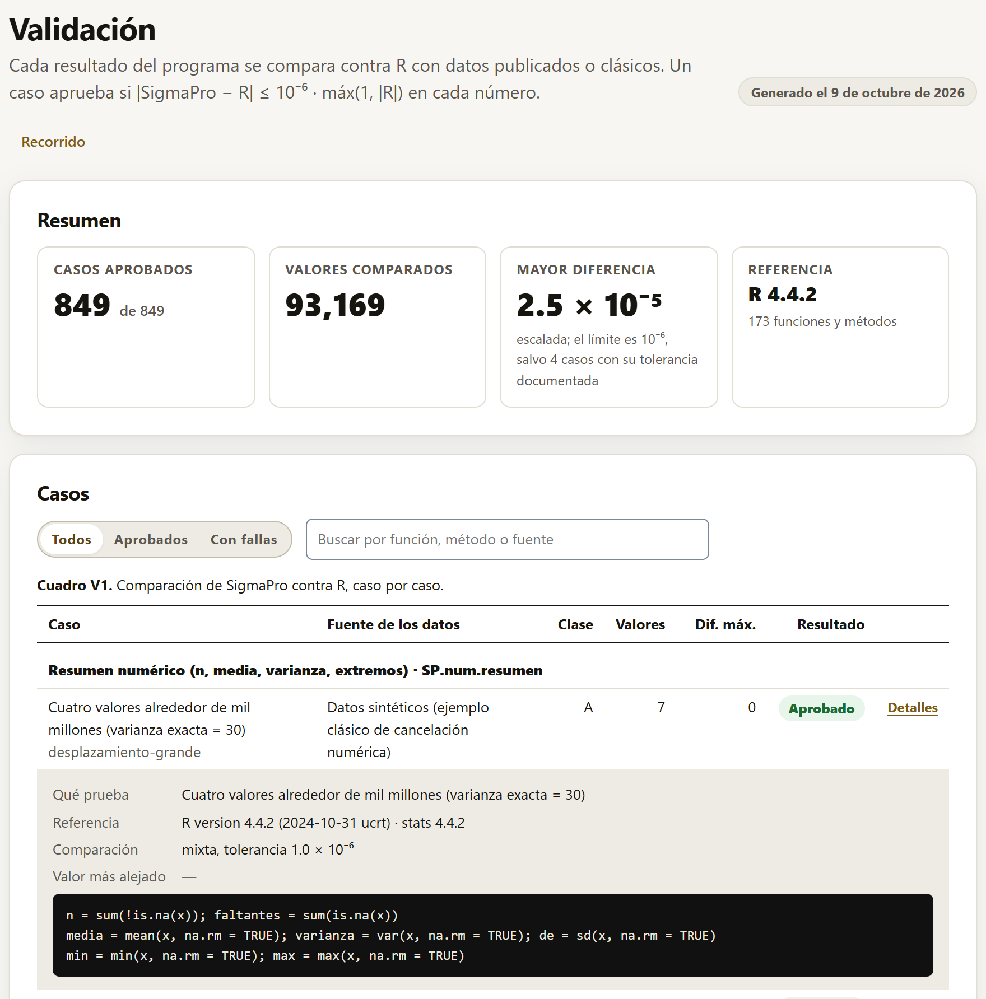

SigmaPro no pide que se le crea: cada resultado del programa se compara contra R, con datos publicados o clásicos, y el reporte de esa comparación viene dentro de la app. Este capítulo explica el criterio, cómo se lee el bloque, qué más se comprueba además de los números y cómo repetir toda la validación en otra computadora.
Un caso de validación es un conjunto de datos (de un libro, un artículo o un paquete de R), un cálculo de SigmaPro y la respuesta de R al mismo cálculo. El caso aprueba si cada número que trae la respuesta de R coincide con el de SigmaPro:
|SigmaPro − R| ≤ 10−6 · máx(1, |R|)
Es decir, seis cifras: absolutas para los números menores que 1 y relativas para los mayores. Algunas reglas lo afinan: un valor p diminuto (menor que 10−6) debe coincidir además en sus cifras relativas, para que un p de 10−20 no apruebe solo por ser «casi cero»; los faltantes y los infinitos de R se esperan como faltantes e infinitos; y los textos se comparan exactos. Se comparan todas las claves que trae la respuesta de R, y todas deben existir en el resultado de SigmaPro.
Las respuestas de R las calculan guiones de R que están junto a la app (tests/r/), con R 4.4.2 y los paquetes de referencia de cada método (car, emmeans, lme4, survival, agricolae y otros). SigmaPro no usa R para calcular, salvo en los métodos del motor R (sección 4.6): su núcleo es propio, y R es el juez.
El bloque muestra el último reporte de validación, el mismo que se genera al correr las pruebas, con su fecha arriba a la derecha. Para que la app abra rápido, el reporte completo se carga la primera vez que se abre el bloque: un momento se lee «Cargando el reporte de validación…».

Debajo del cuadro, una tarjeta resume las otras comprobaciones (sección 8.4), cada una con su fecha, su resultado y su detalle.
No todos los números se pueden comparar de la misma manera. Cada caso lleva una clase que dice qué tipo de cálculo es y cómo se valida.
| Clase | Qué es | Cómo se valida |
|---|---|---|
| A | Fórmula cerrada o algoritmo exacto: sumas de cuadrados, F, t, estimadores, sus valores p. | Contra R, con 10−6. |
| B | R usa una aproximación publicada: el p de Shapiro-Wilk, los cuantiles del rango estudentizado. | Se programa el mismo algoritmo publicado. Si R mismo es menos preciso por diseño, la referencia se calcula en R con más precisión y el hallazgo se documenta. |
| C | R usa azar: Dunnett por omisión, la prueba de Fisher simulada. | Una referencia sin azar, por integración numérica de alta precisión; el valor por omisión de R, aparte, con la tolerancia de su propio error. |
| D | Optimización iterativa: Box-Cox, REML, modelos generalizados, no lineales, ARIMA. | Los dos programas con criterios de convergencia ajustados; 10−6 sobre el resultado convergido, o la tolerancia documentada de la ruta cuando el propio R no da más cifras. |
| E | Cuadros de libros y artículos, impresos con 2 a 4 decimales. | Media unidad del último dígito impreso. Se cita el libro o el artículo, no el programa con que se calculó. |
Cuando la tolerancia de una ruta no es 10−6, el motivo está escrito en el caso y aparece en el reporte de validación publicado; nunca se afloja una tolerancia sin decir por qué. Los hallazgos de la clase B (funciones de R que, por diseño o por redondeo, dan menos cifras que las que se piden) están descritos uno por uno en el documento de validación que acompaña a la app.
Además de los casos contra R, la batería de pruebas comprueba otras diez cosas, cada una con su programa independiente. Cada una deja su resultado, con su fecha, en la tarjeta de otras comprobaciones del bloque Validación.
| Comprobación | Qué se revisa |
|---|---|
| El código R equivalente | El código que muestra la app (sección 4.5) se corre en R, escenario por escenario, y debe dar los mismos números que la app. |
| Las exportaciones | La hoja de cálculo se lee con R celda por celda; el .docx, con un lector de XML; los PDF, los PNG y los TIFF, con lectores de imágenes; el proyecto, con sus huellas, su código R corrido completo y reabierto con los mismos cuadros; y el guardado automático, recuperado en una página nueva. |
| Rendimiento | Con cerca de 100 000 filas, cada análisis común dentro de su meta de tiempo. |
| Privacidad y uso sin conexión | Con datos, análisis y exportaciones, ningún dato sale del navegador; sin red, la app abre, calcula y exporta. |
| Accesibilidad | Cada bloque y los análisis de todas las familias, a lo ancho de una pantalla y de un teléfono, en claro y en oscuro: contraste AA de los textos, nombres y etiquetas para lectores de pantalla, sin desborde lateral y con el teclado. |
| La interfaz en inglés | Cada texto de la interfaz, de los resultados y de los ejemplos tiene su traducción; cada caso de validación da los mismos números en español y en inglés; y ningún resultado armado en inglés deja textos sin traducir. |
| Regresión de resultados y reportes | La huella de cada resultado (todos sus números) y de su reporte (cuadros, conclusiones, semáforo y notas) se compara con la guardada: un número o un texto que cambia sin querer se ve antes de publicar una versión. |
| Secuencia de apertura | La pantalla de apertura (sección 1.6) aparece antes que la interfaz, termina en Start, se quita con Esc, respeta la preferencia de reducir el movimiento, cabe en un teléfono y corre fluida. |
| Fundamentos de cada análisis | Cada análisis tiene su ficha (capítulo 9) con sus nueve apartados en español y en inglés; sus análisis relacionados, su conjunto de ejemplo y sus columnas existen en la app; el ejemplo corre con el método; y cada fórmula se convierte para mostrarse. |
| Enlaces y logos de la suite LABG | Cada app de la suite (capítulo 10) tiene su logo y sus datos, o «PENDIENTE» declarado; las reglas de sugerencia nombran apps que existen; y la página, el repositorio y el manual de cada app publicada responden. Necesita internet: revisa las páginas de las otras apps, algo que la app nunca hace. |
Un método no aparece en la app hasta que tiene casos de validación y todos aprueban. La app lo comprueba sola al abrir, con el reporte de validación que trae: si un caso de un método fallara, el método dejaría de aparecer en el catálogo y, si el asistente lo propusiera, la app diría que todavía no tiene su validación aprobada en lugar de calcularlo. Por eso todo lo que este manual describe está validado.
La validación no depende de quien la hizo: con R y node instalados, cualquiera puede regenerar las referencias con su propio R y volver a comparar.
Hacen falta R (4.4 o posterior) con los paquetes que pide cada caso y node (20 o posterior; no hace falta instalar nada con npm). Desde la carpeta de SigmaPro:
Rscript tests/r/generar-todo.R # regenera las referencias con tu R node tests/motor-r.mjs # los métodos del motor R, en el navegador node tests/correr.mjs # compara y escribe los reportes node tests/navegador.mjs # lo mismo en el navegador, por file:// node tests/codigo-r.mjs # el código R de la app da lo mismo en R node tests/exportar.mjs # las exportaciones, con lectores independientes
motor-r.mjs abre la app en el navegador y descarga el motor R, así que necesita internet; va antes de correr.mjs, que integra sus casos al reporte. correr.mjs escribe el reporte que muestra el bloque Validación y una versión para publicar, en HTML y en CSV. Las demás comprobaciones de la sección 8.4 tienen su propio programa en tests/: idioma.mjs, regresion.mjs, intro.mjs, fundamentos.mjs, suite-enlaces.mjs (con internet), sin-conexion.mjs, rendimiento/medir.mjs y accesibilidad/auditar.mjs.
En Windows, tests/pruebas.ps1 busca R, node y el navegador y corre la comparación contra R, el código R equivalente, la interfaz en inglés, la regresión, las fichas, la prueba en el navegador y la secuencia de apertura. Con -R, antes regenera las referencias; con -Completo agrega las exportaciones, la privacidad, el rendimiento y la accesibilidad (unos 15 minutos), y con -Red, las dos que necesitan internet: el motor R y los enlaces de la suite.